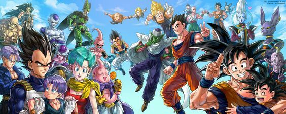

Dragon Ball
With Majin Buu now defeated and Earth at peace, the heroes have settled into normal lives, which in Goku's case means being a radish farmer. They can't get too comfortable in their new lives because more evildoers are on the horizon. Enter Beerus, the powerful god of destruction, who awakens -- far away from Earth -- to a prophecy predicting his demise at the hands of an even more formidable being. His search for that being brings him to Earth, where he enters a battle against Goku and his friends. In order to save the world -- again -- they must defeat Beerus, their strongest opponent yet.
